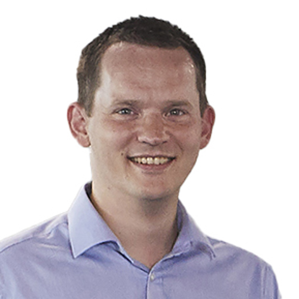
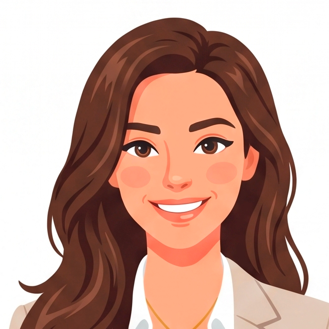
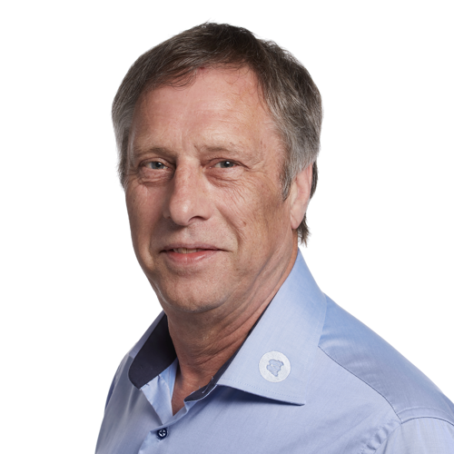
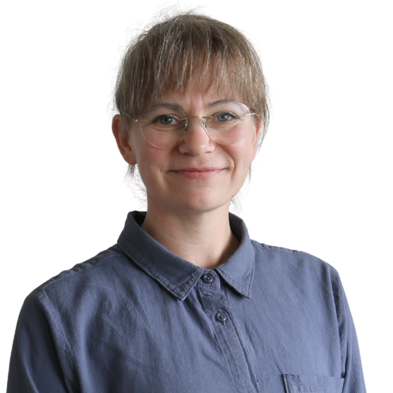
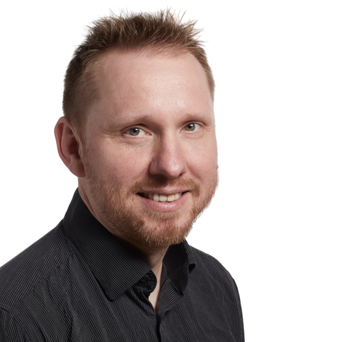
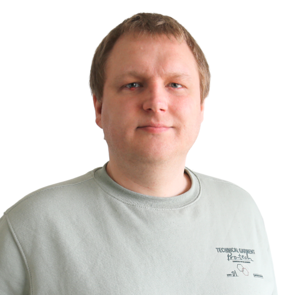
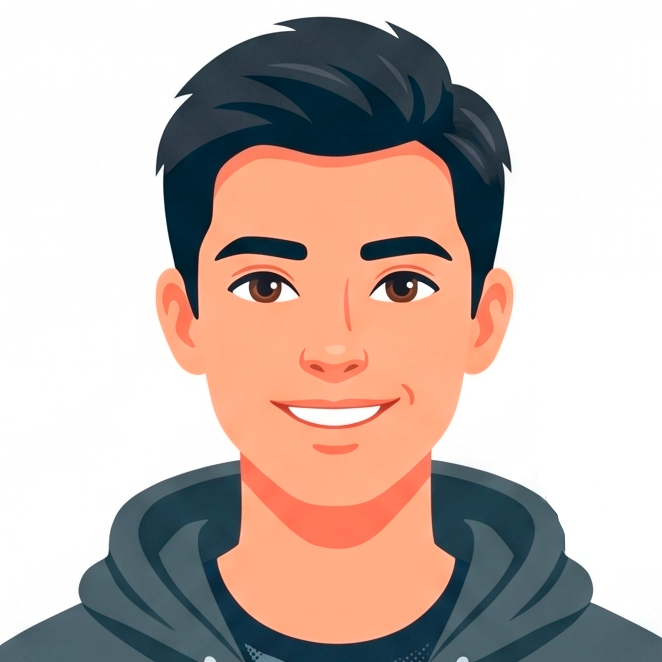
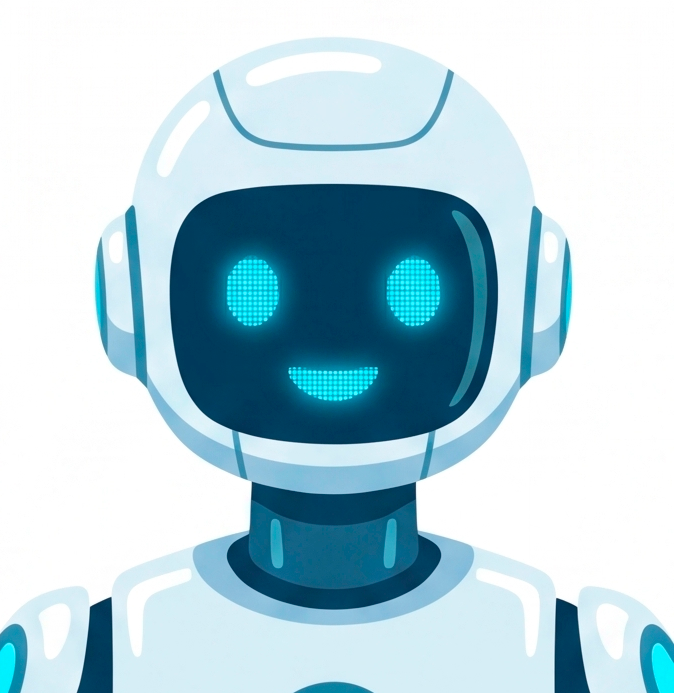

00Organisationsdiagram
Torsten og Kristian deler det overordnede ledelsesansvar — Kristian er derudover CSO og HR-ansvarlig. Organisationen er delt i to spor: Salg & Marketing (kommercielt, Kristian) og Udvikling (delivery, Ulla). AI (Claude, GitHub Copilot, M365 Copilot og ChatGPT) er markeret som en tværgående, ikke-menneskelig ressource.
-

TorstenEjer+KristianCSO & HRFælles ledelsesansvar-
Salg & MarketingKommercielt spor · Kristian
-
MikkelSupport, PM & Marketing
-

New Business ManagerNy rolle -

PerGoogle SEO & Ads -
Jesper OvergaardEkstern partner · Basesite
-
-
UdviklingDelivery-spor
-

UllaHead of Projects-

ErikSenior-udvikler -

MadsUdvikler, backend -
JulieUdvikler, frontend
-
SofieFrontendudvikler
-

PraktikantUdvikler-praktikant
-
-
-
AITværgående ressource
-

AI-værktøjerClaude · Copilot · ChatGPT
-
-
01Organisation & roller
Fem roller dækker i dag drift, salg og udvikling. Hver rolle har et klart mandat — og lige så vigtigt, en klar liste over hvad rollen ikke skal tage sig af.
Deler det overordnede ledelsesansvar med Kristian — strategiske beslutninger, større ansættelser og virksomhedens retning drøftes og besluttes typisk i fællesskab mellem de to.
Ansvar
- Virksomhedens strategi (fælles med Kristian)
- Budget og økonomisk retning
- Store kunder og partnerskaber
- Nøgleansættelser og organisationsudvikling (fælles med Kristian)
- Prioritering mellem større initiativer
Skal ikke
- Projektstyring
- Support
- Daglige kundehenvendelser
- Sprintplanlægning
- Tekniske beslutninger
- Prioritering af enkelte opgaver
Deler det overordnede ledelsesansvar med Torsten — er derudover virksomhedens HR-ansvarlige.
Ansvar
- Salg, tilbud, scope
- Kundeansvar & forventningsafstemning
- Ændringer i kontrakter
- HR — ansættelser, personaleforhold og trivsel
- Virksomhedens strategi og nøgleansættelser (fælles med Torsten)
Eksempler
- Lukke nye kunder
- Lave tilbud
- Vurdere om ekstra ønsker skal koste ekstra
- Håndtere utilfredse kunder
- Ansættelsessamtaler og medarbejdersamtaler
Skal ikke
- Styre projekter
- Prioritere udviklernes arbejde
- Flytte opgaver mellem projekter
- Mikrostyre leverancer
Ansvar
- Første kontakt på support
- Triagering af alle tickets
- Koordinering mellem kunde og udvikling
- Oprette og kvalitetssikre opgaver
- Følge op på status
- Marketingansvar — producerer annoncer/ads-materiale og understøtter markedsføring, herunder onboarding af nye GroupSpace-kunder
Eksempler
- Modtage Zendesk-ticket, genskabe fejlen
- Indsamle logs og screenshots
- Klassificere ticket, oprette Jira-opgave
- Følge op på kunden, lukke sagen når verificeret
Skal ikke
- Love deadlines
- Ændre scope
- Prioritere udviklernes arbejde
- Tage arkitekturbeslutninger
Ansvar
- Projektstyring & ressourceplanlægning
- Kapacitetsstyring & risikooverblik
- Prioritering af leverancer
- Eskalationer
Eksempler
- Flytte ressourcer mellem projekter
- Opdage forsinkelser tidligt
- Beslutte sprintprioriteringer
- Eskalere problemer
Skal ikke
- Sælge
- Ændre kontrakter
- Forhandle priser
- Ændre scope uden Kristian
Ansvar
- Bygge løsninger
- Estimere opgaver
- Melde risici tidligt
- Levere kvalitet
Skal ikke
- Forhandle med kunder
- Ændre scope
- Kontakte Torsten om drift
- Prioritere mellem kunder
Erik har været i firmaet i mange år og har været inde over stort set alt — bred seniorprofil på tværs af backend, frontend, arkitektur og mobil. Eneste undtagelse er Umbraco, hvor han ikke er specialist, men sagtens kan arbejde i det ved behov. Fungerer som en kombination af mentor, teknisk beslutningstager og den, der løser de sværeste opgaver, når det er nødvendigt.
Ansvar
- Tekniske arkitekturbeslutninger på projekter
- Mentor og sparringspartner for øvrige udviklere, særligt juniorer
- Løser de mest komplekse eller kritiske opgaver på tværs af stacken
- Kvalitetssikrer teknisk kritiske dele af leverancer
- Går ind i Umbraco-opgaver ved behov, uden at være specialisten
Eksempler
- Vurderer teknisk løsningsdesign før et projekt sættes i gang
- Code review og sparring på svære problemstillinger
- Rykker ind på et projekt, når en opgave viser sig sværere end estimeret
Skal ikke
- Tage projektledelses- eller salgsbeslutninger
- Gå udenom Ulla i forhold til prioritering mellem projekter
- Forhandle med kunder eller ændre scope
- Kontakte Torsten om drift
Fokus på frontend i dag — udvikler sig på sigt ind i rollen som Umbraco Lead.
Ansvar
- Søgemaskineoptimering (SEO) for Diviso
- Drift af Google Ads-kampagner
- Genererer leads til web- og appopgaver
Skal ikke
- Sælge eller lukke aftaler direkte
- Tage produktspecifikke marketingbeslutninger uden aftale med Kristian
AI er reelt en del af Diviso-teamet — ikke som én rolle, men som et sæt værktøjer der bruges på tværs af organisationen: Claude til analyse, rapportering og struktureret arbejde, GitHub Copilot i udviklingsteamet, M365 Copilot til dokumenter og mail, og ChatGPT til bredere sparring. Fælles for dem alle: de arbejder under en navngiven persons ansvar, aldrig som en selvstændig aktør.
Ansvar / bruges til
- Kodeforslag, debugging og teknisk dokumentation (GitHub Copilot)
- Analyser, rapporter, strategiarbejde og research (Claude)
- Dokumenter, mails og møde-opsummeringer (M365 Copilot)
- Almindelig sparring og idégenerering (ChatGPT)
- Fremskynde førsteudkast, så mennesker bruger tiden på vurdering og finpudsning
Skal ikke
- Træffe selvstændige forretnings-, kunde- eller ansættelsesbeslutninger
- Sende noget til kunder eller eksternt uden menneskelig gennemlæsning og godkendelse
- Stå som eneste "ejer" af en opgave eller leverance — der skal altid være en navngiven person bag output
- Håndtere følsomme data eller kundeoplysninger uden at overholde virksomhedens retningslinjer for AI-brug og GDPR
Fuldtidsstilling. Refererer til Kristian (CSO & HR) som en del af det kommercielle spor. Tidsfordeling: 50% opsøgende salg af Diviso-konsulentprojekter, 50% OmniShare.
Ansvar
- Opsøgende salg af nye konsulentkunder (B2B, 20+ medarbejdere)
- Opsøgende salg og pipeline-opbygning for OmniShare
- Bidrager til produktspecifik pipeline-rapportering
Skal ikke
- Prioritere udviklernes arbejde
- Ændre scope på eksisterende kunder (går til Kristian)
- Overtage Basesite eller GroupSpace-salg
02Produktforretning & vækstroller Opdateret
Ambitionen er klar: OmniShare, Basesite og GroupSpace skal på 2–3 års sigt være en reel vækstmotor — potentielt Divisos største indtægtskilde. Men det er ikke én produktsalgsindsats, det er tre forskellige gå-til-markeds-motioner med hver sin ejer, sin risiko og sin tidshorisont.
De tre spor — status og ejerskab
| Produkt | GTM-motion | Ejer(e) | Status |
|---|---|---|---|
| GroupSpace | Ankerkunde-drevet: Danmarks Jægerforbund (~90.000 brugere) som kickstart | Kristian (salg af aftalen) · Mikkel (onboarding & support) | Igangsat |
| Basesite | Partnerskab / datterselskab med ekstern partner | Jesper Overgaard (medejer, mindretalsandel) · marketingpres fra Diviso | Struktur under afklaring |
| OmniShare | Opsøgende salg + generel SEO/ads | New Business Manager (50% tid) · Per (SEO/ads, ikke produktspecifikt) | Svagest spor — nyligt styrket |
Spor 1 — GroupSpace: ankerkunden
Jægerforbundet-aftalen er den stærkeste vækstmulighed lige nu i kraft af den potentielle brugerbase. Kristian ejer salget, Mikkel ejer onboarding og løbende support ud over sit eksisterende ansvar — vurderet til at være inden for hans nuværende kapacitet.
Hold øje med
- Genvurdér Mikkels kapacitet, hvis GroupSpace rent faktisk begynder at trække brugere fra en base på 90.000 — nuværende vurdering forudsætter gradvis onboarding, ikke et stort samtidigt volumen-hop
- Sæt et konkret mål for antal aktiverede brugere/foreninger fra Jægerforbundet-aftalen som KPI, ikke kun "aftalen er underskrevet"
Spor 2 — Basesite: partnerskab med Jesper Overgaard
I modsætning til de to andre spor er dette ikke kun en bemandingsbeslutning — det er en selskabsretlig beslutning. Et datterselskab med ekstern medejer kræver stiftelsesdokumenter, ejeraftale, vedtægter og en klar model for, hvordan indtægter og omkostninger fordeles mellem Diviso og datterselskabet.
Skal afklares før lancering
- Ejerandel og værdiansættelse af Basesite ved indskud i datterselskabet
- Exit-vilkår hvis samarbejdet ikke fungerer (både for Diviso og for Jesper)
- Hvordan support/drift af Basesite faktureres mellem Diviso og datterselskabet
- Advokatbistand til ejeraftale — sæt en deadline for hvornår aftalen skal være underskrevet, så det ikke trækker ud og forsinker lancering
Spor 3 — OmniShare: det svageste spor, nu styrket
OmniShare havde ingen reel ejer af væksten — Per's SEO/ads-arbejde er generelt for Diviso, ikke produktspecifikt. Det er rettet ved at give New Business Manager en 50/50-fordeling mellem opsøgende konsulentsalg og OmniShare, fremfor at lade OmniShare være "bonus".
Hold øje med
- 50/50-fordelingen er et forsøg — hvis konsulentsalg presser OmniShare-tiden væk i praksis (typisk mønster når én person har to mandater), bør det synliggøres i KPI-dashboardet som timer brugt, ikke kun resultater
- Overvej om Per's SEO/ads-arbejde kan få en produktspecifik del øremærket til OmniShare, så sporet ikke kun bæres af én ny medarbejder
Ny rolle i organisationen
New Business Manager — fuldtid, refererer til Kristian. 50% opsøgende konsulentsalg, 50% OmniShare. Se fuld rollebeskrivelse under Organisation ovenfor.
Beslutninger der stadig mangler
- Basesite-ejeraftale: Skal formaliseres med advokat — ejerandel, exit-vilkår, faktureringsmodel mellem Diviso og datterselskab
- Konkrete pipeline-mål pr. produkt for 6-måneders checkpointet — sæt tal nu, så "positive tegn" ikke bliver en skøn-diskussion til sommer
- Jægerforbundet-KPI: Definér hvad succes betyder i brugertal/foreninger, ikke kun at aftalen er lukket
- Genbesøg 50/50-fordelingen for New Business Manager efter 3 måneder — juster hvis konsulentsalg reelt fortrænger OmniShare-tiden
03Arbejdsflow
Torsten indgår ikke i dette flow.
04Eskaleringsregler
| Til | Hvornår |
|---|---|
| Mikkel | Alle nye supporthenvendelser |
| Ulla | Ressourceproblemer, forsinkelser, blokeringer, prioriteringskonflikter |
| Kristian | Scopeændringer, nye ønsker, tilbud, kundeøkonomi |
| Torsten | Kun hvis: strategisk kunde er i risiko · strategisk beslutning skal træffes · nøgleansættelser · betydelige økonomiske konsekvenser · Kristian og Ulla er uenige |
Eskalationsformat
Ingen må eskalere et problem uden en anbefaling. Alle eskalationer skal indeholde: 1) Situation 2) Konsekvens 3) Mulige løsninger 4) Anbefaling.
Konsekvens: Produktionen er stoppet.
Muligheder: Hurtigt workaround · Permanent rettelse · Midlertidig rollback
Anbefaling: Implementér workaround nu og permanent rettelse i næste release.
05Zendesk & SLA
Kunden sender fortsat mail til support — ingen formular. Zendesk opretter automatisk ticket. Mikkel klassificerer, tilføjer impact og type, opretter udviklingsopgave og følger sagen til den er lukket.
Tickettyper
Bug · Support · Feature Request · Access Issue
Prioritet & SLA
| Prioritet | Eksempel | Respons | Løsning |
|---|---|---|---|
| Blocker | System nede | 1 time (handling inden 4 timer) | 1 arbejdsdag |
| High | Central funktion virker ikke | 4 timer (handling samme dag) | 2–3 arbejdsdage |
| Medium | Mindre fejl | 1 arbejdsdag | 3–7 arbejdsdage |
| Low | Feature request | 2–3 arbejdsdage | Planlægges i backlog |
06Definition of Done
Support (ticket)
- Kunde
- Problem
- Reproducerbarhed
- Impact
- Screenshots hvis muligt
Mikkel — må først sende videre når
- Ticket er klassificeret
- Prioritet er sat
- Opgave er skrevet
- Acceptance criteria findes
Ulla — må først planlægge når
- Scope er klart
- Kapacitet er vurderet
- Ansvarlig er valgt
- Deadline er fastlagt
Udvikling — opgaven er først færdig når
- Udviklet
- Testet
- Acceptance criteria er opfyldt
- Dokumenteret
Lukning — Mikkel lukker først sagen når
- Kunden er bekræftet hjulpet
- Ingen åbne afhængigheder findes
- Ticket er opdateret
07KPI-dashboard (ugentlig)
Torsten skal kun modtage én side.
Salg
- Pipeline
- Vundne/tabte tilbud
- Pipeline-værdi pr. produkt (OmniShare / Basesite / GroupSpace)
Delivery
- Røde projekter
- Kapacitetsudnyttelse
- Leveringssikkerhed
Support
- Nye tickets
- Åbne blockers
- SLA-overholdelse
- Gennemsnitlig svartid
Økonomi
- Omsætning
- Forecast
- Risici
08Implementeringsplan (30 dage)
09Succeskriterier
Efter 2–3 måneder bør følgende være opnået:
- Torsten bruger under 20% af tiden på drift
- Ingen udviklere går direkte til Torsten med daglige spørgsmål
- Mikkel filtrerer al support og koordination
- Ulla styrer leverancer og kapacitet
- Kristian ejer kunden og det kommercielle
- Ledelsen arbejder ud fra fakta og KPI'er frem for ad hoc-status